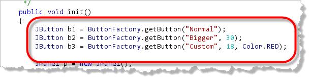
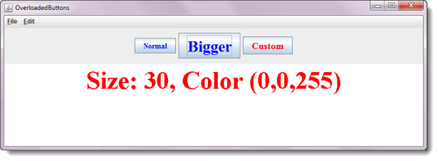

You might be surprised to find out that the same class can have two methods that have the same name. In fact, you can have several methods, in the same class, all sharing the same name; it's quite common. Such methods are called overloaded methods.
Here is the basic rule that determines how such methods can be created and which particular version of a method will be called. Methods in the same class may have the same name, if:
- The number of their formal parameters differ
- The type or order of their parameter types differ
This combination of method name, formal parameter type, number, and order, is called the method's signature, and it acts like "DNA" to uniquely identify a particular method.
Overloaded Examples
Here is a class with several methods, all having the same name. Take a look at the different method signatures, and, using the rules you've just learned, decide which methods are legal, and which methods are illegal (assuming that all of them appeared in the same class, just as shown here).
public class TestIt
{
public void aMethod() { }
public void aMethod(int a) { }
public void aMethod(int a, int b) { }
public void aMethod(int c, int d) { }
public void aMethod(int a, byte b) { }
}
Of the five methods here, numbers 1, 2, and 5 are legal, while number 3 and 4 (highlighted in the listing here) are not, because they have the same number and type of parameters.
Actually both 3 and 4 are legal; just not together. You only need to eliminate one of the conflicting methods, and the other will be fine.
Return Types
When looking at the method signature, Java does not consider the return type of the method. Java will not permit two methods in the same class that have identical signatures, but different return types.
Because of this, the following two methods cannot co-exist in the same class:
public int doIt(int a) { }
public double doIt(int b) { }
Calling Overloaded Methods
When calling a method, Java looks at the actual arguments to decide which of several overloaded methods to call. This is called argument matching. The rules for matching actual argument with the formal parameters can become quite baroque, but here's the simple version.
For this example, we'll use a version of the TestIt
class, with the third method removed. We'll call this class
TestIt2, as shown here. (You'll find it in this
chapter's code folder).
public class TestIt2
{
public void aMethod() { }
public void aMethod(int a) { }
public void aMethod(int c, int d) { }
public void aMethod(int a, byte b) { }
}
Let's assume as well,
that you have created a TestIt2 object like this:
TestIt2 obj = new TestIt2();
Here are the rules that will apply when you try
to call any of the methods in the TestIt2 class
using your object obj.
Rule 1 : Number of arguments
Java first tries to match the number of actual arguments with a method that has the same number of formal parameters. If it cannot find a match, then it gives up as an error. Thus the method call:
obj.aMethod(10, 20, 30);
immediately fails, because there are no methods that take three arguments.
Rule 2 : Exact type matches
Once Java has located a candidate method, (or methods), having the correct number of formal parameters, it compares the type of each actual argument to the corresponding formal parameter. If an exact match can be found, then Java calls the method. Thus the method call:
obj.aMethod(10, 20);
exactly matches the third method, because both
arguments are of type int.
Rule 3 : Acceptable conversions
If Java cannot match the exact types of arguments, it looks for acceptable conversions, preferring the conversions that are closest to the actual argument type. Java will not, however, make conversions where data will be lost. Thus the call:
obj.aMethod(10, 1.5);
will always fail because 1.5 cannot be converted to either
an int or a byte, the only two options
for the second argument, given the available methods.
Good Arguments
When you call a method, the actual arguments you pass must be compatible with the formal parameters. Java will attempt to ensure this using a process called type-checking.
Generally what this means is that if assignment would succeed then the method call will also succeed. Remember, you can normally assign a smaller or less precise value to a more precise variable.
Here are some examples of acceptable primitive arguments that may help you:
| Formal Parameters | Acceptable | Unacceptable |
|---|---|---|
| byte | byte |
everything else |
| short | byte, short |
everything else |
| int | byte, short, int, char |
everything else |
| long | byte, short, int, char, long |
float, double |
| char | byte, short |
everything else |
| long | byte, short, int, char, long |
float, double |
| float | float, all integer types |
double |
| double | all numeric types | none |
Overloading II : Why Bother?
Why bother with method overloading? Doesn't it seem like having multiple methods, all with the same name, would be confusing? How are you supposed to remember which method is being called?
All of these are valid arguments against using overloaded methods. Simply giving all of your methods the same name without ample planning and forethought really will make your programs harder to understand and maintain.
Making Easy-to-use Methods
Properly used, however, method overloading allows you to write methods that are much easier to use than those that don't employ overloading. Here's an example using ButtonFactory.java from the last section.
Suppose that 90% of the buttons in your current project always use a blue, 24 point font, but that 5% require a 30 point blue font and the remaining buttons require fonts in varying sizes and colors.
The Generic Solution
To meet these requirements you could use the generic
getButton() method (from the last
section). If you do so, it means that for all
of your buttons you'll have to write this:
JButton b = getButton("String", 24, Color.BLUE);
even though you know that 90% of the time you
will be using 24 and Color.BLUE as the
last two arguments.
Uniquely-named Methods
Another option would be to write multiple, uniquely-named
methods, like get24ptBlueButton() and
get30ptBlueButton(), and have each of these
methods call getButton() passing the correct
arguments.
Overloaded Methods
Finally, a third option would be to write three different
methods, but to name all three methods getButton().
For the vast majority of your buttons—those blue, 24 point
ones—you could call the method defined like this:
JButton getButton(String text) { }
For those times when you need a blue button, but in a different size, you can call the method defined like this:
JButton getButton(String text, int fontSize) { }
Finally, for the time when you really
need 10 point yellow buttons, you can use the "full-featured"
version of getButton() which is defined like this:
JButton getButton(String text, int fontSize, Color bColor) { }
Defining and Refining getButton()
It might seem like this is a lot of extra work, just
to make calling a few methods a little simpler. That turns out,
however, not to be the case. Once you have defined the
"full-featured" version of getButton(),
the other versions just call that version to get their actual
work done. Both overloaded methods are only a single line long.
Here is the single-argument version of getButton()
that you can add to ButtonFactory.java:
public static JButton getButton(String text)
{
return getButton(text, 14, Color.BLUE);
}
Here is the two-argument version:
public static JButton getButton(String text, int fontSize)
{
return getButton(text, fontSize, Color.BLUE);
}
Using Overloaded getButton()
Using these overloaded getButton()
methods is much easier on the users of your class than
having them try to remember the names of several different
button-creation functions, or having them pass three arguments
for every button, especially when most of the buttons use
the same arguments.
Furthermore, when you use overloaded methods
like this, if your manager decides that those 90% of your
buttons should have been green instead of blue, you only have to
change one function. If you used the generic
getButton() to create your buttons, you'll have to
change the actual arguments used for every button.
Here's another version of our sample program, this one named
OverloadedButtons.java, that uses these three versions
of getButton() to create different buttons like
this:

When the program runs it looks like this:
Of course, since you have the program in this chapter's code folder, you can compile it and run it yourself, once you've finished enhancing theButtonFactory class.

Overloaded Method Summary
- Methods in the same class may have the same name, provided that the number of arguments or the order of arguments differ. Such methods are called overloaded methods.
- The method name, type and order of arguments is known as the method signature and it is used to determine which of several identially named methods is called when a request is made.
- Although the return type of a method is not part of its signature for purposes of overloading, you generally should used the same return type for all such methods.
- When a method is called, the actual arguments are matched to each possible method to determine which one to invoke. The number of parameters must be the same for a match to occur. If the types of the arguments are an exact match to the method signature, that method is preferred.
- If an exact match cannot be found, then any automatic implicit conversions are applied to attempt to find a match. When attempting such conversions, only widening conversions which would not result in a loss of information, are attempted.
- Overloaded methods are useful because they can simplify the interface of your class for those who use it.